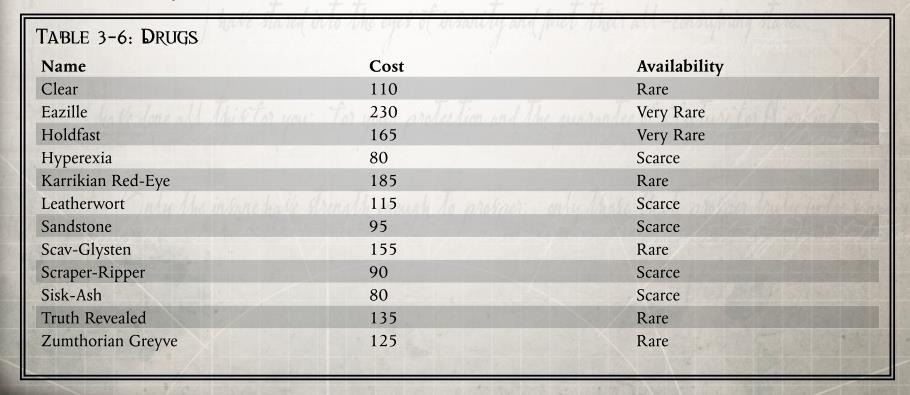
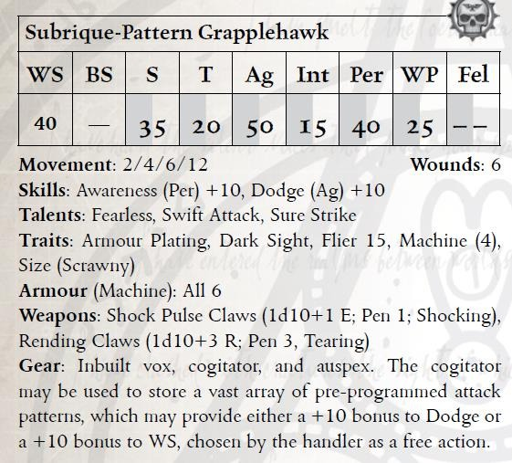
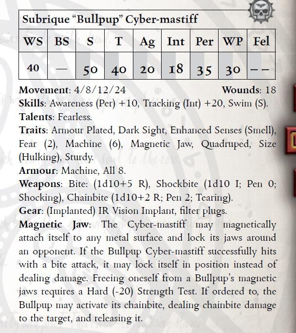
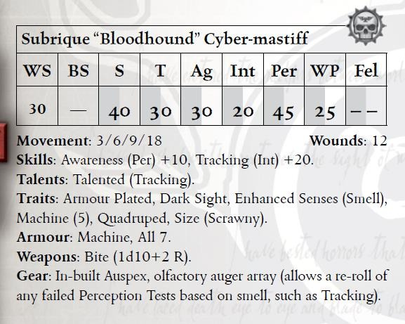
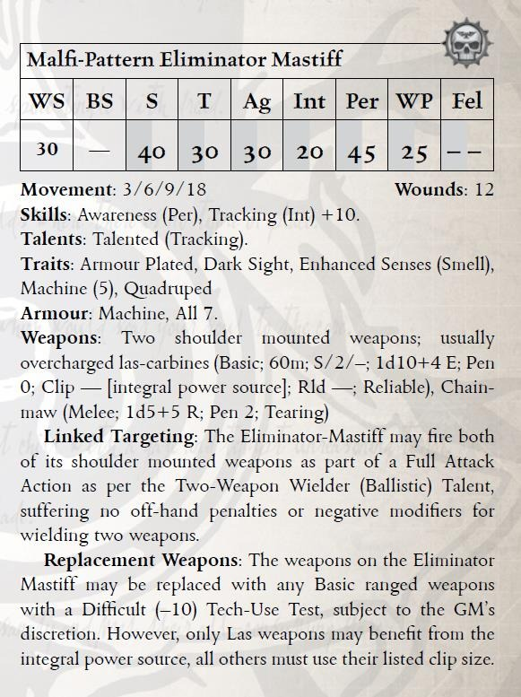
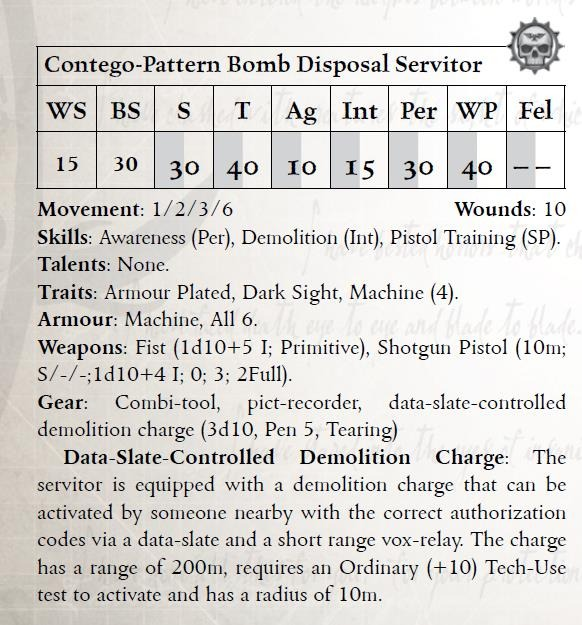

“超能抗”合剂在佩诺帕斯（penopass）巢都的俚语中也被称为格牢布（Glob）。“超能抗”是一种来自荒地的化学品。小剂量地摄入多次后，它会使皮肤变得像是厚橡胶一样。使用者将对极端高温和低温有更大的耐受力，使他们能够在其他人需要特殊装备的地方正常工作。这一点对佩诺帕斯人尤其有用，因为当地的白天通常酷热难当而夜晚则是可能会使人血液冻结的极寒。
摄入“超能抗”可以使人获得抵抗（冷、热）的天赋，但是因为它能促进更高的代谢率，摄入者也会遭受 1 点的虚弱。“超能抗”必须在几天内至少服用十几次才能生效。之后，使用者必须每周服用一剂以保持其增厚的皮肤。
尽管叫这个名字，但是这种药不会改变眼睛的颜色。它得名于卡里克星（karrik）的欧格林，据说他们能够在几英里外发现坦克引擎的热量。这种药物可以让使用者比正常人看到更多的红外光谱。例如，他们能够检测到离开车辆的热信号，或者注意到嫌疑人躲在哪扇门后面。
使用者在 1d5 小时内的警觉检定中获得+20，并且可以看到热成像。过度使用会使视力变差，使用者需要更明亮的光线才能正常视物。如果每天使用一次以上，则需要进行难度（-10）的坚韧检定，如果失败则当天所有基于视力的检定获得-20 的惩罚。
“皮菌”是在洛斯世界（Loss）上发现的一种真菌产物，在那里它们经常被作为应急食品生吃，现在它被马尔菲星区的帮派们大量使用，他们通常称呼“皮菌”为“硬皮”（Tuff）。皮菌在经过腐烂，干燥和压制后，就制成了可以涂抹到皮肤上的块状物质（译者注，大概就是类似干粉块，可以抹在皮肤上的）。当化学物质渗入时，涂抹部位会变成斑驳的深绿色，然后慢慢恢复正常颜色。这些部位的痛觉神经会短暂麻痹，并且皮肤会变得像硬皮革一样。
使用了“皮菌”的部位被视为具有 2 额外的护甲，可以和正常护甲叠加。使用者在基于坚韧的检定中获得+10 加值。
这种药是一种从辛福德星（synford）铸造厂排放的污染物中提取出的副产品。拾荒者们找到了大量的油性液体，并发现饮用这些液体可以减轻他们身上令人不适的气味。克劳乌（Clove）巢都从这些液体中提取出了巢沟油，它们通常被注射以达到最好的效果。一旦进入血液，它就会影响毛孔，改变汗腺和其他生理进程，使其不会发出任何气味、信息素或任何其他可用于追踪的东西。多次用药后，使用者的眼睛会呈现出一种不自然的外观，就像有一层油膜一样，在角膜上呈现出彩虹色。
使用巢沟油会对任何试图通过气味追踪使用者的跟踪检定获得-30 修正，持续 1d10 小时。当使用者试图躲避或追踪动物时，也会获得潜行和躲藏技能。
这种药物由一种花粉提取物制成，提取自塞勒斯·伍尔帕世界（Cryus Vulpa）上一种曾经被认为毫无价值的植物。夸蒂斯（Quaddis）上的享乐主义者听说咀嚼这种花朵会产生奇特的神经快感，但他们一直不能从中提炼出任何有用的提取物。然而，他们失败的副产品就是“砂岩”——将花粉蒸馏成黄色颗粒，然后压缩制成的硬块。这些颗粒可以被制成口嚼糖，或者磨成粉末用于注射。“砂岩”可以极大程度地增强使用者的意志力，让使用者忽略可怕的对手、流血的伤口、饥饿等等“小问题”。“砂岩”也可以让使用者可以挺过住残酷的审讯，甚至可以中和一些审讯中使用来削弱抵抗意志的药品。
一剂“砂岩”可以持续 1d5+3 小时，使用者所有基于意志的检定都能获得+30 加值，同时在抵抗审讯的检定中获得+10 加值。但是如果使用者未能在一次困难（-10）坚韧检定中成功将导致药效结束后遭受一层虚弱。

从西斯克世界（Sisk）进口的“灰烬”是由一种当地常见的灌木植物的燃烧残留物制成的。这些灰色的小片与拉霍（lho）混合并焚烧时会产生一种带有独特的甜味的烟气，这种香味如此浓稠和甜腻，甚至可以防止机械猎犬（cybermastiff）追踪使用者。烟雾会让使用者感觉放松和平静，并且如果使用者愿意的话靠近的其他人也可以感受到同样的放松。如果不与拉霍（lho）混合的话这种灰烬的药效会更强大，并可能导致吸入者失去意识。
西斯克灰的放松效果通常持续 1d5 小时，当吸入者被要求做他们选择不做的事情（比如行军）时，可能需要进行难度为（+30）的意志检定。如果不与拉霍混合使用，那吸入烟雾的人必须进行难度为（-20）的坚韧坚定，否则会昏迷 1 小时。
这种药物产生于巴拉斯佩恩（Baraspine）深处，是一种强大的血清，可以抑制对质询的抵抗。也被称为“王座真理”（Verity to Throne）制剂，下巢人则更简单地称呼它“吐真剂”（veal）。这种血清在正常的生理痛苦无法逼迫人说出真相时被整个星区的特工大量使用。
血清受害者在对抗审讯和其他收集信息的检定时受到-50 的惩罚，持续 3d5 减去受害者坚韧加值小时。
当摄入这种怪异药剂后，使用者会感觉自己被包裹在迷雾之中并且会对一切外界刺激感到麻木。
使用者可以忽略虚弱 2d5 小时，并且他们还可以在所有基于坚韧的检定中获得+40 加值，并抵抗任何形式的审讯。一旦效果结束，他们必须通过难度为（-30）的坚韧检定否则获得 2 层虚弱。
辛提拉（Sintilla）不仅以其许多伟大的事物而知名，也因为其污秽的地下世界而闻名。开膛手合剂是由西贝柳斯下巢湖泊中发现的稀有盲鱼制成的。苍白的鱼肉被搅碎打成糊状，其风干后的粉末就可以注射或吸入。开膛手合剂在西贝柳斯下巢相对常见，并由胆大包天到来下巢寻找刺激的贵族慢慢传播到整个星区。开膛手合剂可以加快反应动作速度，但不会加快思维的速度，因此，虽然使用者可以远离冷兵器挥砍或躲避来袭的子弹，但他们也很容易听到未知的噪音，甚至突然攻击惊吓到他们的伙伴。
服用开膛手可以使角色在 1d5 小时内对所有基于敏捷的检定获得+30 加值，但使用者需要在难度为（-20）的意志检定中成功，以避免在受到任何刺激时做出过激的反应。
书里漏填，论坛用户 CodenameXXIII 咨询了设计师 Tim Huckelbery 后得到的答复：
| Constructor Interface | 1000 thrones | Rare |
|---|---|---|
| Karrikian Lock-Arm | 1200 | Rare |
| Landian Reveler | 950 | Very Rare |
| Malfian Dermaguise | 1100 | Very Rare |
每一位智能敖犬操作员都必须配备这种为萨布里克型号机构量身打造的设备，才能在卡利西斯星区部署时实现有效的控制与接驳。该设备利用四重冗余的 ε-密钥声波脉冲发射器，以高速短波的形式发送指令，并接收来自各种机构的信息、音频及影像资料。其性能之强大甚至可与服役机仆或伺服颅骨连接，尽管这些机体并不设计为可由此设备直接接受命令。
构建者接驳器中储存了数百种攻击、扑击及规避模式，每一套战术都需操作员历经多年调校打磨，依照各机构的独特属性加以适配。例如，一只比标准重量轻半公斤的擒捕鹰便可能需在高风条件下设定特殊的翼角与引力应对策略。再考虑到环境地形与大气因素，仅在单一巢都中就需要数十种不同程序进行调度操作。若需跨区作业，使用者在瞬息之间便需完成数十项参数运算。
所有构建者接驳器至少为优秀品质，允许操作者在对智能敖犬或擒捕鹰下达命令时使用技术应用（Tech-Use）技能替代指挥（Command）技能进行检定。该设备最多可连接五个构造体，但仅能主动指挥其中两个，其余则仅可传回数据，但无法接受命令。只有智能敖犬与擒捕鹰可被下达指令，其它机构仅限回报信息。若为最极品品质接驳器，可主动控制三个机体，但总接驳上限仍为五个。
使用者可通过一次完整动作向目标机体上传一套战术程序，赋予下列任一能力：
萨布里克巢都出产的智能敖犬因其基因气味追踪系统而闻名遐迩。尽管卡利西斯机械修会尝试过多次想要开发出可随身携带的版本，但始终未获成功。工匠技师昂图奥（Tech-Wright Ontuo）不愿接受此事为“不可实现”的现实，便开始了毕生探索兰德安达化学海洋秘密的征途，誓言揭示这些化学物的感应机制。最终成果，便是“朗德探嗅仪”。
此义体增强装置并非以沉思者处理数据，而是将一类信息素导电化学物质注入用户眼内，使其“肉眼可视气味”，连同其他生物标记也一览无遗。该装置通常仅安装于一只眼中，使使用者在非激活状态下仍可正常视物。
装备“朗德探嗅仪”的角色获得“强化五感（嗅觉）”与“天赋异禀（追踪）”两项天赋。此外，若角色失明，则仍可通过嗅觉定位目标，且其远程或近战攻击检定仅承受–10 的惩罚。激活装置为一次半动作，化学物质即刻注入视野。
若为优秀品质的“朗德探嗅仪”，失明状态下的技能检定将不受任何惩罚。极品级则进一步附带强效的成像目镜或红外目镜增强系统。
在重力极高的卡里克星（Karrik），法务部的审判员必须在轨道治安要塞之外活动时，借助强力伺服马达来强化他们的护甲和装备。由于卡里克位于星区边缘，许多奴隶贩子视其为“唾手可得的猎物”，帝国卫队对欧格林（Ogryn）兵员的征召时常遭受威胁。
尽管审判员与法官穿戴的强化动力甲在过去百年中表现优异，锁臂（Lock-Arm）已经成为本地法务人员的某种成年礼仪。
那些被奴隶贩子诱导的欧格林，极易受骗，却也是极为致命的近战战士。一旦他们将那惊人的力量用来对付审判员，即使是动力甲也难以抵挡，常见的攻击方式是尝试撕下敌人的手臂，哪怕将护甲一起扭烂。
正因此，许多卡里克的审判员都佩戴着锁臂——这是一种甚至足以与欧格林抗衡的强力伺服增强义肢。除了极高的力量加成，锁臂内还嵌入了数十个磁场发生器与反应式抓钉装置。如此强大的义肢，若无辅助固定系统，极有可能将使用者自身从地面拉起或扯伤。因此，在需要的时候，这些抓钉与磁性装置会从手臂发射，刺入周围的支撑结构，形成多点固定，从而将使用者稳固下来，以便制服强敌而不自伤。
游戏效果：拥有卡里克锁臂的角色在进行擒抱或约束目标的检定时，视为拥有超自然力量（x3）。此外，使用该手臂进行近战攻击时，力量值+20。
来自整个卡利西斯星区的冒名顶替者经常前往马尔菲星朝圣，只为接受极少数外科医师提供的一项独特、痛苦而危险的手术。在该手术中，数百块电控柔性板会被植入皮下，并连接到一组微型伺服机构中。术后，受术者可以通过数据板控制这些板片，使自己的面部结构发生改变。
这一过程极为痛苦，许多马尔菲隐颜器的用户会因此依赖止痛药物。板片的运动常常会撕裂皮肤，或导致面部组织被奇怪地拉伸。术后往往需要数日时间让新面貌与皮肤“融合”愈合，虽说较小的改动可更快恢复。过度使用该装置甚至可能永久损伤肌肉与面部组织，导致用户在未使用装置时无法做出正常表情。
游戏效果：使用者需耗费 5 轮时间并通过一次普通（+0）技术应用检定来改变面貌，获得+20 伪装检定加值以模仿他人，并承受 1 级虚弱（Fatigue）。一旦虚弱恢复，此加值提升为+30。若技术应用检定失败，每有 1 级失败度，使用者便会因金属撕裂肌肉而受到 1 点撕裂伤害（不受坚韧减免）。若失败度超过 3，使用者必须通过一次困难（-20）坚韧检定（Toughness Test），否则将永久失去 1d5 交际（Fellowship）。
若使用者试图将重塑过程压缩至 1 轮，除初始每轮减少带来的节省外，每减少一轮便会累积-10 技术应用检定惩罚。
优秀品质的隐颜器版本额外配备了全身色素洗刷器，使使用者可以变更肤色（变亮或变暗）。该义体没有极品品质版本。
卡利西斯星区的辽阔使得大型、高调的犯罪制造活动在最理想的情况下也只是难以维持，而在最坏的情况下简直是自取灭亡。星区的黑市地下世界在几个世纪中发展成了一个由彼此毫无关联的小团体组成的网络，而不是一个个强大犯罪集团的联合体。尽管存在极少数例外，比如卡斯巴利卡，但绝大多数非法走私与装备制造行为仍由巢都帮派主导。这类事务通常由执法者处理，因为此类轻微罪行通常不会危及行星的帝国什一税。
具有重大影响力的组织，比如永恒财团，极为罕见，且通常只限于某一特定星球。有时，一群贵族可能会反对行星总督，囤积武器，试图为自己攫取权力。只要这些行为不影响世界的稳定（也即，不影响什一税的征收），法务部通常不会介入。然而，一旦某组织的行为引发了严重动荡，或被发现有异端嫌疑，那么法务部便会迅速介入。
在整个卡利西斯星区，拾荒者帮派是非法武装与犯罪装备的主要制造者。这些帮派多为小规模、自发组成的团体，意图为自身获取权力或财富。由于他们更像是一个个地下社会单元，而非统一的犯罪整体，法务部必须投入大量资源监控这些小型细胞，以防其扰乱现有秩序。虽然逮捕与处决（或转为机仆）的任务主要由执法者负责，但有时也确实会有审判官为个人目的而亲自出面拘捕某位帮派头目。
相比帮派，阴谋集团构成的威胁更大，也更难以察觉。这些阴谋往往由权势贵族与受过专门训练的异端技术士组成。在一个阴谋真正开始向黑市倾销危险物品之前，法务部往往只对其运作略知一二。等到有贵族被杀、生产工厂被破坏、或现场血迹斑斑时，法务部才会意识到有情况发生，此时他们必须立刻行动，防止传统的补给链与装备仓库遭到劫掠或破坏。
例如，炮铜城最近便出现了“剖割帮”的崛起。这些帮派由一群技术娴熟的成员组成，专以绑架并拆解受害者身体的义体部件为业牟利。许多贵族不惜一切代价防止自己被掳走，因为这些罪犯通常无法被谈判解救——因为目标“死了比活着更值钱”。鉴于这类罪行的高度曝光率，剖割帮通常难以维持长久。
当某位黑帮分子或底巢权贵想要获得一件极其稀有或强力的装备时，他们通常必须通过定向偷盗来获得。这就是为何智能构造体（如赛博猎犬）与其他法务部设备偶尔会落入不受欢迎者手中的原因。这些装备一般保养不良，除非购买者权势滔天或与机械修会有密切联系。
与获取物品本身一样困难的，还有伪造合法文件与物品来历，以证明该装备的“合法性”。虽然底巢居民对这些问题毫不关心，但贵族或其他“体面”的罪犯则会雇佣数十名内政部文员来维护表面上的合法身份。
远古年代，帝国诸机关曾与机械修会缔结密约，约定除特定例外外，大多数帝国组织不得使用过于复杂的机魂系统。更重要的是，大多数人类普遍认为这类设备本身就带有渎神意味。在文化层面上，帝国社会更习惯于高度赛博化的系统，这类系统融合了有机构件，例如将罪犯或动物的颅腔掏空，用于操控重型机械、武器或星舰。
机仆（Servitors）——那些被切除大脑、全面机械改造并重新赋予用途的罪犯或人工生物——遍布整个人类星域。对大多数帝国公民而言，这些生物早已司空见惯。帝国的大部分重工业在很大程度上依赖这些悲惨的、毫无意识的生物，它们在任务之间机械地游走，依靠与身体连接或焊接的装备进行搬运、清洁，或完成其他单调或高危的工作。
虽然法务部偶尔也会使用机仆，但其使用程度远不如泰拉诸庭的其他分支。法务部以其纪律严明和自力更生而自豪，在许多治安要塞中，有一种不成文的信条：过度依赖机仆只会助长懒惰精神，这与法务部应有的简朴操守格格不入。尽管如此，仍有部分机仆在法务部中尽其有限能力履行职责，主要用于解放审判员的执行压力。例如，自动武装机仆广泛用于哨岗守卫；此外还有少数经过重度改装的机仆用于其他更专业的职能。
除了机仆，法务部也会部署智能构造体，即内嵌动物本能的机械装置。常用的动物模板包括犬类和鸟类。这些构造体通常由专属的机械修会工厂制造，如萨布里克巢都（Hive Subrique），这座工厂为卡利西斯法务部提供了绝大多数的智能构造体。
这类罕见的机械随身兽仅在法务部中广泛使用，其外形如同一只优雅、闪耀着银光的不锈钢猎鹰。其晶亮的脑壳内嵌有经过转植的禽类本能——专精于不致伤目标的扑击技巧。这些本能与机体构造结合，再辅以强劲的悬浮推进器与可撕裂铸铁的利爪，使得执法者能够迅速（尽管粗暴地）在卡利西斯巢都街头制伏目标。
擒捕鹰可挂载于执法者的腰部或装甲上备用，一旦发现罪犯，可瞬时释放追击。作为卡利西斯对古老设计图的一种本地改良版本，该型号较为轻便，且内置震击爪强调的是高速打击而非力量施展，表现出极佳的机动性。


这款重型电子猎犬通常由卡利西斯法务部配备，由萨布里克巢都内机械修会工坊按照大判官戈尔曼前任的命令定制制造。其本质上是一件恐惧武器——一具构造庞大、重装钢铁骨架的杀戮机体。
它装配了次声波扩音器，可持续发出低频音波，旨在引发部署区域内居民的本能恐惧反应。因此在大规模骚乱中，此型号常被投入使用。
“公牛犬”不仅能承受大多数轻武器火力，还足以单独压制多名武装敌人，常作为压制暴动、防止内乱爆发的最后手段投入战场。它的震荡咬钳同时具备链锯功能，并配有磁性锁足与咬合结构，使其一旦锁定目标便不易脱离。

“寻血猎犬”是萨布里克巢都深层工坊打造的一款电子猎犬变种，融合了来自朗德化学海洋的稀有成分，用以将空气中粒子转换为可量化数据。
尽管大多数电子猎犬具备一定追踪能力，但“寻血猎犬”在编程与行为逻辑上由卡利西斯星区最出色的训导员设定。它被植入轻型猎犬机体，搭配全星区最先进的嗅觉传感器（甚至有人称其为帝国级别的尖端技术），将动物本能与科技感知完美结合。
这套强大设备还配合一种高度有效的训练机制：当“寻血猎犬”成功寻获目标时，其脑内认知核心将受到电脉冲刺激，从而强化“搜寻即奖励”的行为模式。
这一训练令其形成一种“执着追踪”的强迫性行为。据传有“寻血猎犬”曾连续追踪目标数百公里不眠不休——尽管这更可能是执法者用于震慑罪犯的恐吓之词。
尽管马尔菲（Malfi）的执法者以腐败无德而臭名昭著，但某些治安分局的声誉尤其黑暗。这些执法者在“正义”的名义下可以铲除任何人，只要他们收到了足够的索拉币。他们的行径彻底扭曲了“正义”的概念，而“终结型猎犬”正是这种扭曲理念的代表。
这是一种高度改装的智能构造体猎犬（Cyber-Mastiff），其程序与协议完全不考虑生擒目标，仅负责追踪、狩猎、并杀死被输入其高端嗅迹识别程序的目标。大多数机体肩部配有双联过载激光武器，头部则安装了往复式链刃利齿，也有部分型号配备了更强力的武器。
注：马尔菲猎犬的 BS 为 30（官方人员邮件回复）

炮铜城（Gunmetal City）的底巢结构不稳，爆炸装置可能会导致生产中断数月甚至数年。因此，原先由机械修会为制造厂设计的这款机仆，用以处置挥发性物质（尤其在火器制造中极为常见），被重新部署为拆弹单位。
康特戈型机仆通常以已被脑叶切除的纵火犯与炸弹制造者为基础，搭载有装甲通用型机仆躯壳、一支臂部安装的霰弹手枪（用于近距离摧毁爆炸装置）、一把多功能工具臂，以及一台图像记录器。配属在地方法务部的堡垒中时，这些机仆还会配备一枚拆除用爆破炸药。
康特戈机仆通过一台专属数据板进行控制，有效距离为 200 米，允许操作者远程使用其技术应用或爆破技能进行爆炸物拆解。但由于远程操控不便，技能检定将承受-10 的惩罚。

当席贝柳斯巢都的治安部需要驱散暴动民众时，他们会部署镇压机仆协助执法者。这些巨型机仆高达两米半，猿类般的前倾姿态极具压迫感，脸部被换成了星区领主印封的镀金面具。
一只手臂装配了大型气动冲击发射器，能将暴徒如树叶般击飞；另一只手则被完全替换为复杂的双武器系统。官员们清楚，只要一小队镇压机仆，便能震慑成千上万人的暴乱。被镇压的煽动者甚至会被改造成下一批镇压机仆，以儆效尤。